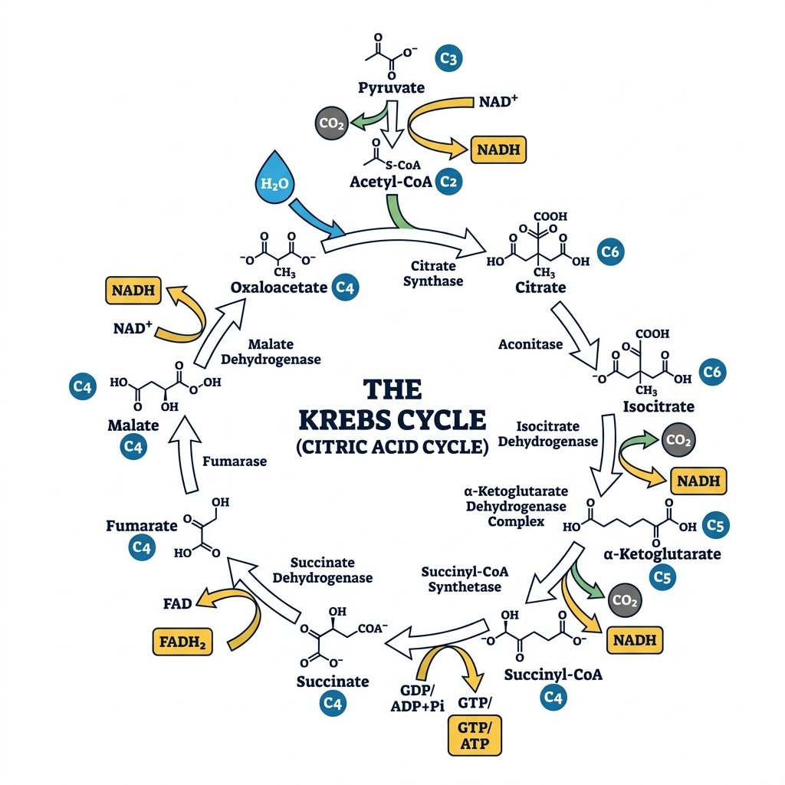

Biology - Complete Exam Prep Q&A
Consolidated Previous Year Questions (2023-2025)
Group A — 1 Mark Questions
1. (I) Discuss how the classification system has undergone several changes over a period of time.
Biological classification started with Aristotle's simple morphological division into plants and animals. Carolus Linnaeus formalized the Two-Kingdom system (Plantae and Animalia). Later, Ernst Haeckel proposed a Three-Kingdom system (adding Protista). Copeland introduced a Four-Kingdom system (adding Monera). Eventually, R.H. Whittaker proposed the widely accepted Five-Kingdom system (Monera, Protista, Fungi, Plantae, Animalia), and Carl Woese introduced the modern Three-Domain system (Archaea, Bacteria, Eukarya) based on ribosomal RNA differences.
1. (II) The process of transfer of hereditary character from one generation to another is known as...........?
Inheritance or Heredity.
1. (III) Name the Vitamins whose deficiency cause i) rickets ii) scurvy
i) Rickets is caused by a deficiency of Vitamin D.
ii) Scurvy is caused by a deficiency of Vitamin C (Ascorbic acid).
1. (IV) Define enzymes with suitable example.
Enzymes are biological catalysts (usually proteins) that significantly speed up the rate of specific chemical reactions in the cell without being consumed. Example: Amylase, which breaks down starch into sugars.
1. (V) Name the enzyme that transcribes hnRNA in eukaryotes.
RNA Polymerase II transcribes hnRNA (heterogeneous nuclear RNA), which is the precursor to mRNA.
1. (VI) How many essential amino acids are in the nature?
There are 9 essential amino acids for humans (Histidine, Isoleucine, Leucine, Lysine, Methionine, Phenylalanine, Threonine, Tryptophan, and Valine) out of the 20 standard amino acids.
1. (VII) What are imperfect fungi?
Imperfect fungi (Deuteromycetes) are fungi in which a sexual reproductive stage has not been observed; they only reproduce asexually.
1. (VIII) A sudden change in the gene which is heritable from one generation to other is known as_______________.
Mutation.
1. (IX) Why carbohydrates are generally optically active?
Carbohydrates are generally optically active because they contain one or more chiral carbon atoms (asymmetric carbons attached to four different groups), causing them to rotate the plane of polarized light.
1. (X) Name few of the enzyme secreted by pancreas?
Pancreatic enzymes include Trypsin and Chymotrypsin (for proteins), Pancreatic Amylase (for carbohydrates), and Pancreatic Lipase (for fats).
1. (XI) Diatoms are also called ‘pearls of the ocean’. Why?
Diatoms are called 'pearls of the ocean' because their cell walls are made of highly ornamented, glass-like silica (frustules), which makes them look shiny and beautiful under a microscope, and they are highly valuable as major primary producers in marine ecosystems.
1. (XII) Which of the following process is an exception of Mendel Law? (A. Mutation, B. Variation, C. Cloning, D. Linkage)
D. Linkage. Linkage violates Mendel's Law of Independent Assortment because genes located close together on the same chromosome tend to be inherited together.
1. (I) The portion of the growth curve where rapid growth of bacteria is observed is known as ____________
Log phase or Exponential phase.
1. (II) The human eye can focus objects at different distances by adjusting the focal length of the eye lens. This is due to__________.
Accommodation (specifically, the action of the ciliary muscles changing the lens curvature).
1. (III) What is meant by the term osmoregulation?
Osmoregulation is the active regulation of the osmotic pressure of an organism's body fluids to maintain the homeostasis of the organism's water content (maintaining fluid and electrolyte balance).
1. (IV) Who is known as father of genetics?
Gregor Johann Mendel.
1. (V) What is meant by power of accommodation of the eye?
The power of accommodation is the ability of the eye lens to automatically adjust its focal length to form a sharp image on the retina of objects situated at varying distances.
1. (VI) Enzyme increases the rate of reaction by lowering the activation energy. Is this statement true or false?
True.
1. (VII) What is cistron?
A cistron is a section of a DNA or RNA molecule that codes for a specific polypeptide in protein synthesis; it is essentially the functional unit of a gene.
1. (VIII) State two economically important uses of heterotrophic bacteria.
1. Dairy Industry: Lactobacillus is used to convert milk into curd/cheese.
2. Pharmaceuticals: Used in the production of antibiotics (e.g., Streptomyces producing streptomycin).
1. (IX) What is the main function of kinase?
The main function of a kinase enzyme is to catalyze the transfer of a phosphate group from a high-energy molecule (like ATP) to a specific substrate (a process called phosphorylation).
1. (X) The growth of bacterial population follows a geometric progression. True or False?
True (Bacteria divide by binary fission, doubling their population each generation, which is a geometric/exponential progression).
1. (XI) Are viruses living or non-living?
Viruses are considered to be at the boundary between living and non-living. They are non-living (inert particles) outside a host cell, but exhibit living characteristics (replication and genetic mutation) when they infect a living host cell.
1. (XII) Fluid Thioglycollate medium is used for the cultivation of which type of organism?
It is used primarily for the cultivation of anaerobic bacteria (as well as microaerophiles and aerobes, to determine their exact oxygen requirements based on where they grow in the tube).
1. (I) Discontinuous synthesis of DNA occurs in ______during replication of DNA.
Lagging strand (forming Okazaki fragments).
1. (II) ________amino acids can be produced by the body even if we do not get it from the food we eat.
Non-essential amino acids.
1. (III) Krebs cycle occurs in which part of the cell?
In the Mitochondrial matrix.
1. (IV) Which microorganisms are used to produce alcohol?
Yeast (specifically, Saccharomyces cerevisiae).
1. (V) The phenotypic ratio of dihybrid experiment is _________.
9 : 3 : 3 : 1
1. (VI) __________ is also known as “suicidal bag”.
Lysosome.
1. (VII) The genotypes of blood group O is __________.
ii (or I⁰I⁰).
1. (VIII) The general molecular formula of Carbohydrates is _________________.
Cₙ(H₂O)ₙ (or C_n(H_2O)_n).
1. (IX) In ___________ inhibition, the inhibitor competes with the substrate for binding to the active site of an enzyme.
Competitive inhibition.
1. (X) The excision of introns and the formation of final mRNA molecule by joining the exons is called _____
Splicing (or RNA splicing).
1. (XI) The chromosomes with satellite are known as ______.
SAT chromosomes (Satellite chromosomes).
1. (XII) Glycolysis is also known as _____
EMP pathway (Embden-Meyerhof-Parnas pathway).
Group B — 5 Mark Questions
2. Differentiate between aminotelic, uricotelic, ureotelic organisms.
| Feature | Ammonotelic | Ureotelic | Uricotelic |
|---|---|---|---|
| Excretory Product | Ammonia | Urea | Uric Acid |
| Toxicity | Highly toxic | Less toxic than ammonia | Least toxic |
| Water required for excretion | Very high (requires large amounts of water to dilute) | Moderate | Very low (excreted as a semi-solid paste to conserve water) |
| Examples | Bony fishes, aquatic amphibians | Mammals, terrestrial amphibians | Birds, reptiles, insects |
3. Differentiate between Meiosis and Mitosis.
| Feature | Mitosis | Meiosis |
|---|---|---|
| Purpose | Growth, repair, and replacement of somatic (body) cells. | Production of gametes (sperm and egg) for sexual reproduction. |
| Divisions | One division | Two consecutive divisions (Meiosis I and II) |
| Daughter Cells | 2 diploid (2n) daughter cells, genetically identical to the parent. | 4 haploid (n) daughter cells, genetically distinct from each other and the parent. |
| Crossing Over | Does not occur. | Occurs during Prophase I, increasing genetic variation. |
4. Differentiate between prokaryotic and eukaryotic cell.
| Feature | Prokaryotic Cell | Eukaryotic Cell |
|---|---|---|
| Nucleus | No true nucleus. DNA is freely floating in a region called the nucleoid. | True nucleus present, enclosed by a nuclear membrane. |
| Organelles | Lacks membrane-bound organelles (no mitochondria, ER, or Golgi). | Contains membrane-bound organelles (mitochondria, chloroplasts, ER). |
| Size | Generally small (0.1 - 5.0 μm). | Generally larger (10 - 100 μm). |
| DNA Structure | Single circular chromosome. | Multiple linear chromosomes. |
| Examples | Bacteria and Archaea. | Animals, Plants, Fungi, Protists. |
5. Explain Epistasis with suitable example.
Epistasis is a type of gene interaction where the expression of one gene is masked or modified by the expression of one or more other genes. Unlike dominance, which involves interaction between alleles of the same gene, epistasis involves interaction between alleles of different genes.
Example: Coat Color in Labrador Retrievers
The coat color is determined by two genes:
- Gene 1 determines the pigment color: B (Black) is dominant to b (Brown/Chocolate).
- Gene 2 determines if the pigment is deposited in the hair: E (allows deposition) is dominant to e (prevents deposition).
6. In catalyzed reactions, the formation of the enzyme-substrate complex is the first step. Explain the other steps until the formation of the product.
The action of an enzyme is generally described by the Catalytic Cycle. After the Enzyme (E) binds to the Substrate (S) to form the Enzyme-Substrate (ES) complex, the following steps occur:
- Formation of the Transition State (ES* or EX‡): Once the ES complex is formed, the enzyme alters the chemical environment (by changing pH, applying physical strain, or aligning reacting groups). This lowers the activation energy and forces the substrate into an unstable, high-energy transition state.
- Formation of Enzyme-Product Complex (EP): The chemical bonds within the substrate are broken and/or newly formed. The substrate is chemically converted into the product, but it remains temporarily bound to the enzyme's active site, forming the EP complex.
- Release of Product (E + P): The product has a different shape and chemical affinity than the original substrate. It no longer fits well into the active site, causing the enzyme to release the product into the surrounding medium.
- Enzyme Recovery: The enzyme emerges from the reaction entirely unchanged. Its active site is now free and ready to bind to a new substrate molecule to repeat the cycle.
2. How are co-factors different from prosthetic groups?
Both are non-protein components essential for the catalytic activity of certain enzymes (holoenzymes), but they differ in how they bind to the enzyme:
- Co-factors: This is a broad term for non-protein helper molecules. Specifically, when referring to inorganic ions (like Mg²⁺, Zn²⁺) or loosely bound organic molecules (coenzymes like NAD⁺), they bind transiently and loosely to the apoenzyme. They usually associate with the enzyme only during the chemical reaction.
- Prosthetic Groups: These are organic or inorganic non-protein molecules that are bound tightly and permanently (often covalently) to the enzyme. An example is the heme group tightly bound to hemoglobin or cytochromes.
3. Give characteristics of genetic code.
The genetic code is the set of rules by which information encoded in genetic material (DNA or mRNA sequences) is translated into proteins. Its key characteristics are:
- Triplet Code: Three consecutive nucleotide bases (a codon) code for one specific amino acid.
- Universal: With few exceptions, the same codons code for the same amino acids in almost all organisms, from bacteria to humans.
- Unambiguous (Specific): A specific codon always codes for only one specific amino acid (e.g., UUU always codes for Phenylalanine).
- Degenerate (Redundant): Multiple different codons can code for the same amino acid (e.g., UUU and UUC both code for Phenylalanine).
- Non-overlapping and Commaless: The code is read continuously, three bases at a time, without any overlapping bases or gaps/commas between codons.
4. Differentiate between DNA/RNA.
| Feature | DNA (Deoxyribonucleic Acid) | RNA (Ribonucleic Acid) |
|---|---|---|
| Sugar | Deoxyribose sugar (lacks one oxygen atom). | Ribose sugar. |
| Nitrogenous Bases | Adenine (A), Guanine (G), Cytosine (C), Thymine (T). | Adenine (A), Guanine (G), Cytosine (C), Uracil (U) instead of Thymine. |
| Structure | Usually Double-stranded (Double Helix). | Usually Single-stranded. |
| Function | Stores and transfers long-term genetic information. | Acts as a messenger (mRNA) to transfer code to ribosomes to make proteins. |
| Stability | Highly stable, less prone to mutation. | Less stable, highly reactive, prone to rapid degradation. |
5. Explain Krebs cycle. draw suitable flowchart for explanation.
The Krebs Cycle (also known as the Citric Acid Cycle or TCA cycle) is a series of chemical reactions used by all aerobic organisms to generate energy through the oxidation of acetyl-CoA derived from carbohydrates, fats, and proteins into carbon dioxide and chemical energy in the form of ATP (or GTP). It occurs in the mitochondrial matrix of eukaryotes.
Flowchart of the Krebs Cycle:

Note: For every molecule of Acetyl-CoA entering the cycle, it produces 2 CO₂, 3 NADH, 1 FADH₂, and 1 ATP/GTP.
6. The sequence of the coding strand of DNA in a transcription unit is mentioned below.
3′ AATGCAGCTATTAGG 5′
Write the sequence for:
1. Its complementary strand
2. Its mRNA
Understanding the strands:
The sequence provided is the Coding Strand (Non-Template strand). The question writes it in the 3' to 5' direction: 3' AATGCAGCTATTAGG 5'. Normally, the coding strand is written 5' to 3', but we must follow the polarity given.
1. Its Complementary Strand (The Template Strand):
The template strand is antiparallel and complementary (A pairs with T, C pairs with G).
Coding: 3' A A T G C A G C T A T T A G G 5'
Template: 5' T T A C G T C G A T A A T C C 3'
2. Its mRNA sequence:
The mRNA sequence is identical to the Coding Strand sequence, except all Thymines (T) are replaced by Uracils (U). The polarity remains exactly the same as the coding strand.
Coding: 3' A A T G C A G C T A T T A G G 5'
mRNA: 3' A A U G C A G C U A U U A G G 5'
(If rewritten in the standard 5' to 3' format, it would be: 5' GGAUUAUCGACGUAA 3')
2. What are different types of culture media based on the physical state? Distinguish between agar and broth?
Based on their physical state, culture media are classified into three types:
- Solid Medium: Contains a solidifying agent (like 1.5% - 2.0% agar). Used to observe colony morphology and isolate pure cultures.
- Semi-solid Medium: Contains a reduced amount of agar (0.5% or less). It is jelly-like, used to test bacterial motility and microaerophilic growth.
- Liquid Medium (Broth): Contains no solidifying agents. Used to grow large quantities of microbes rapidly.
Distinction between Agar (Solid) and Broth (Liquid):
| Feature | Agar (Solid Medium) | Broth (Liquid Medium) |
|---|---|---|
| Composition | Contains Agar powder (extracted from seaweed) as a solidifier. | Lacks Agar; it is purely a liquid solution of nutrients. |
| Growth Appearance | Bacteria grow as distinct, visible colonies on the surface. | Bacteria grow uniformly, turning the clear liquid turbid (cloudy). |
| Primary Use | Isolating pure cultures and identifying species morphology. | Growing a massive number of bacteria quickly for biochemical assays. |
3. Draw a comparison between eye and camera.
Both the human eye and a camera are optical instruments designed to capture light and form an image. Their functions map closely to one another:
| Function | Human Eye | Camera |
|---|---|---|
| Light Entry | Cornea: The clear front surface that acts as the initial protective window. | Lens Cover/Front Glass: Protects the internal camera lens. |
| Controlling Light Amount | Iris & Pupil: The iris expands/contracts to change the pupil size, regulating light hitting the retina. | Diaphragm & Aperture: The diaphragm adjusts the aperture size to control light hitting the sensor. |
| Focusing | Crystalline Lens: Changes shape (accommodation) via ciliary muscles to focus objects. | Glass Lens System: Moves physically back and forth to focus on objects. |
| Image Capture (Sensor) | Retina: Light-sensitive tissue containing rods and cones that captures the inverted image. | Photographic Film / Digital Sensor: Captures the inverted image. |
| Preventing Internal Reflection | Choroid: Black pigmented layer inside the eye absorbing scattered light. | Black interior paint: Absorbs scattered light inside the camera body. |
4. Draw labeled diagram of Animal cell as seen in Electron microscope. Comment on characteristics of Animal cell.
Characteristics of an Animal Cell:
- Eukaryotic: It possesses a true, membrane-bound nucleus housing linear DNA.
- No Cell Wall: Unlike plant cells, animal cells lack a rigid cell wall, giving them a flexible, irregular, or spherical shape. They are enclosed only by a selectively permeable plasma membrane.
- No Chloroplasts: They cannot perform photosynthesis and are heterotrophic.
- Small/No Vacuoles: If present, vacuoles are small and numerous, used for temporary storage or transport, unlike the large central vacuole of a plant cell.
- Presence of Centrosomes/Centrioles: Unique to animal cells, these structures organize microtubules and are vital during cell division (mitosis/meiosis).
- Lysosomes: Abundant in animal cells, acting as the digestive system of the cell by containing hydrolytic enzymes.
Labeled Diagram Representation:

5. Write short note on Central dogma.
The Central Dogma of Molecular Biology:
Proposed by Francis Crick in 1958, the Central Dogma describes the fundamental flow of genetic information within a biological system. It states that genetic information flows in one direction: from DNA to RNA, and from RNA to Protein.
It consists of three major processes:
- Replication: DNA makes an exact copy of itself to pass genetic information to the next cell generation. (DNA → DNA)
- Transcription: The information in a specific segment of DNA (a gene) is copied into a mobile messenger molecule called mRNA. (DNA → RNA)
- Translation: The ribosome reads the sequence of the mRNA and translates it into a specific sequence of amino acids to build a functional protein. (RNA → Protein)
Flow: DNA ──(Transcription)──> mRNA ──(Translation)──> Protein
Note: Retroviruses (like HIV) possess Reverse Transcriptase, allowing an exception where RNA is converted back to DNA, but the general rule holds for cellular life.
6. Explain the types of lipids depending on the esterification.
Lipids are a diverse group of organic compounds insoluble in water. Based on their chemical composition and esterification (what alcohol the fatty acids are esterified with), they are classified into three main types:
- Simple Lipids:
These are esters of fatty acids with various alcohols. They contain no other chemical groups.
- Fats and Oils (Triglycerides): Esters of fatty acids with glycerol. Fats are solid at room temperature (saturated), while oils are liquid (unsaturated). Used for energy storage.
- Waxes: Esters of fatty acids with high-molecular-weight monohydric alcohols. Used for waterproofing (e.g., beeswax, cutin on leaves).
- Compound (Complex) Lipids:
These are esters of fatty acids with an alcohol, but they also contain additional prosthetic groups (like phosphates, carbohydrates, or proteins).
- Phospholipids: Contain a phosphate group. They form the structural basis of all cell membranes (lipid bilayer).
- Glycolipids: Contain a carbohydrate (sugar) group. Important for cell recognition on the cell surface.
- Lipoproteins: Lipids bound to proteins, essential for transporting fats through the bloodstream (e.g., HDL, LDL).
- Derived Lipids:
These are substances derived from the hydrolysis (breakdown) of simple and compound lipids that still possess lipid-like characteristics. Examples include fatty acids, glycerol, and sterols (like cholesterol and steroid hormones).
Group C — 15 Mark Questions
7. Give characteristics of E.coli, S. cerevisiae, D. Melanogaster as model organisms.
Model organisms are extensively studied to understand particular biological phenomena, with the expectation that discoveries made in the model will provide insight into the workings of other organisms.
1. Escherichia coli (E. coli) - The Model Prokaryote
- Rapid Growth: It has a very short generation time (divides every 20-30 minutes under optimal conditions), allowing for quick experiments.
- Simple Genetics: It has a single, small circular chromosome. Its entire genome was one of the first to be fully sequenced.
- Ease of Manipulation: It is extremely easy to grow in cheap culture media and easily accepts foreign DNA (plasmids), making it the workhorse of molecular cloning and recombinant DNA technology.
2. Saccharomyces cerevisiae (Baker's Yeast) - The Model Simple Eukaryote
- Simple Eukaryote: It is a single-celled organism but possesses eukaryotic structures (nucleus, mitochondria, ER), bridging the gap between bacteria and complex eukaryotes.
- Fast Life Cycle: Like bacteria, it grows rapidly and is easy to cultivate.
- Homology to Humans: Many of its fundamental cellular processes (cell cycle regulation, DNA repair) are highly conserved and similar to human processes.
3. Drosophila melanogaster (Fruit Fly) - The Model Multicellular Animal
- Short Life Cycle: From egg to adult takes only about 10-12 days, allowing researchers to study multiple generations quickly.
- High Fecundity: A single female can lay hundreds of eggs, providing large sample sizes for statistical genetic analysis.
- Polytene Chromosomes: Their salivary glands contain giant polytene chromosomes, making it easy to observe chromosomal abnormalities and gene mapping under a microscope.
- Genetic Similarities: Despite being an insect, about 75% of known human disease genes have a recognizable match in the fruit fly genome.
8. Explain the Hierarchy of DNA structure- from single stranded to double helix to nucleosomes.
The vast length of DNA must be highly compacted to fit inside the microscopic nucleus of a cell. This compaction occurs in a strict hierarchical structural organization:
1. Primary Structure (Single Stranded):
The primary structure is the linear sequence of nucleotides. Each nucleotide consists of a phosphate group, a deoxyribose sugar, and a nitrogenous base (Adenine, Thymine, Cytosine, or Guanine). They are linked together by phosphodiester bonds, forming a sugar-phosphate backbone with bases extending outward.
2. Secondary Structure (Double Helix):
Two complementary single strands of DNA wrap around each other to form a right-handed double helix (the Watson-Crick model). The strands are anti-parallel (running 5' to 3' in opposite directions). The helix is stabilized by hydrogen bonds between complementary bases: Adenine pairs with Thymine (2 H-bonds) and Guanine pairs with Cytosine (3 H-bonds).
3. Tertiary Structure (Nucleosomes and Chromatin):
To fit inside the cell, the double helix must be tightly folded.
- Nucleosomes (The "Beads on a String"): The DNA double helix wraps around a core of eight positively charged histone proteins (an octamer of H2A, H2B, H3, and H4). This DNA-histone complex is called a nucleosome. This is the first level of compaction, forming a 10 nm fiber.
- Solenoid / 30nm Fiber: The nucleosomes undergo further packing. Histone H1 binds to the "linker DNA" between nucleosomes, pulling them together into a coiled structure called a solenoid (or 30 nm fiber), creating dense chromatin.
- Higher-order folding: The 30 nm fibers loop and scaffold onto non-histone proteins to form 300 nm fibers, which further condense into chromatids, ultimately forming the highly condensed Chromosomes visible during cell division.
9. How will you convey that Biology is as important a scientific discipline as Mathematics, Physics and Chemistry.
Biology is fundamentally interconnected with Mathematics, Physics, and Chemistry, and is arguably the most directly consequential scientific discipline to human survival and quality of life.
- Health and Medicine: Biology is the foundation of all medical sciences. Without a deep understanding of human anatomy, physiology, genetics, and microbiology, the development of vaccines, antibiotics, surgical procedures, and targeted cancer therapies would be impossible.
- Food Security and Agriculture: Understanding plant biology, genetics, and ecology allows us to breed high-yield, disease-resistant crops, manage soil health, and combat pests, which is critical for feeding a growing global population.
- Environmental Conservation: Biology provides the tools to understand ecosystems, biodiversity, and the impacts of climate change. This knowledge is essential to prevent ecological collapse, manage resources sustainably, and preserve the planet for future generations.
- Interdisciplinary Hub: Modern biology relies heavily on other disciplines, making it a central science. It uses Chemistry to understand metabolism and DNA (Biochemistry), Physics to understand fluid dynamics in blood or optics in the eye (Biophysics), and Mathematics/Computer Science to sequence genomes and model population dynamics (Bioinformatics and Biostatistics).
- Biotechnology: The application of biological processes for industrial purposes—such as using microbes to produce biofuels, clean up oil spills (bioremediation), or manufacture insulin—shows that biology is not just observational, but an applied engineering discipline.
While Physics explains the universe's rules and Chemistry explains matter, Biology explains the complex emergent property of life itself, making it uniquely essential.
10. Give characteristics of C. elegance, A. Thaliana, M. musculus as model organisms.
1. Caenorhabditis elegans (C. elegans) - The Model Nematode (Roundworm)
- Transparency: Its body is entirely transparent, allowing researchers to track the development of every single cell in a living organism under a microscope.
- Fixed Cell Count: Adult hermaphrodites have exactly 959 somatic cells. The exact lineage of every cell from the fertilized egg is mapped, making it the premier model for developmental biology and apoptosis (programmed cell death).
- Simple Nervous System: It has exactly 302 neurons, and all the neural connections (the connectome) have been completely mapped.
2. Arabidopsis thaliana (A. thaliana) - The Model Plant
- Small Genome: It has one of the smallest genomes among plants, which was the first plant genome completely sequenced.
- Rapid Life Cycle: It grows from a seed to producing new seeds in just about 6 weeks, allowing for rapid genetic crossing.
- Small Size: It is a small weed that can be easily cultivated in tight spaces (like petri dishes or small pots) in a lab environment.
- High Seed Production: A single plant produces thousands of seeds, ideal for studying mutation rates.
3. Mus musculus (House Mouse) - The Model Mammal
- Mammalian Physiology: As a mammal, its anatomy, physiology, and genetics are extremely similar to humans (over 90% of human genes have a direct counterpart in the mouse).
- Genetic Manipulation: Mice are highly amenable to genetic engineering. We can create "knockout mice" (where specific genes are deleted) or "transgenic mice" (where human genes are inserted) to study human diseases like cancer, Alzheimer's, and diabetes in a living mammalian system.
- Breeding: They reproduce relatively quickly for mammals (gestation is about 20 days) and have large litters.
11. Explain how competitive, uncompetitive and non-competitive inhibitors act on km and vmax.
Enzyme inhibitors are molecules that decrease enzyme activity. Their mechanisms profoundly affect enzyme kinetics, specifically the Michaelis constant (Kₘ, an indicator of substrate affinity; lower Kₘ means higher affinity) and maximum velocity (Vₘₐₓ).
1. Competitive Inhibition:
- Mechanism: The inhibitor structurally resembles the substrate and competes directly for the same active site on the free enzyme.
- Effect on Vₘₐₓ: Unchanged. If you add a massive amount of substrate, it will outcompete the inhibitor, and the enzyme can still reach its normal maximum speed.
- Effect on Kₘ: Increases. Because the inhibitor competes for the active site, the enzyme's apparent affinity for the substrate drops, requiring more substrate to reach half Vₘₐₓ.
2. Uncompetitive Inhibition:
- Mechanism: The inhibitor binds only to the Enzyme-Substrate (ES) complex (not the free enzyme). It binds at an allosteric site, locking the substrate in and preventing the reaction from completing.
- Effect on Vₘₐₓ: Decreases. Since some ES complexes are permanently locked and cannot form products, the total number of functional enzyme molecules drops, lowering the maximum speed.
- Effect on Kₘ: Decreases. By locking the substrate to the enzyme, the inhibitor prevents the substrate from leaving, artificially making the enzyme appear to have a higher affinity for the substrate.
3. Non-Competitive Inhibition:
- Mechanism: The inhibitor binds to an allosteric site (a site other than the active site) on both the free enzyme and the ES complex. It changes the enzyme's 3D shape, preventing it from catalyzing the reaction, even if the substrate is bound.
- Effect on Vₘₐₓ: Decreases. The functional concentration of the enzyme is reduced because inhibited enzymes cannot convert substrate to product, no matter how much substrate is added.
- Effect on Kₘ: Unchanged. The inhibitor does not interfere with the substrate binding to the active site; it only prevents catalysis. Therefore, the affinity (Kₘ) remains the same.
7. Illustrate the two models by which an enzyme holds the substrate.
Enzymes are highly specific catalysts. The way they bind their specific substrates to their active sites is explained by two primary models:
1. The Lock and Key Model (Emil Fischer, 1894):
This model postulates a rigid binding mechanism.
- Concept: The enzyme's active site is viewed as a rigid "lock," and the substrate is the "key."
- Mechanism: The geometry of the substrate exactly matches the pre-existing, static geometry of the enzyme's active site. They fit together perfectly without any structural changes to the enzyme.
- Limitation: This model explains enzyme specificity well but fails to explain how enzymes stabilize the transition state of a reaction or how non-competitive inhibitors affect the enzyme's shape.
2. The Induced Fit Model (Daniel Koshland, 1958):
This is the more widely accepted, modern model.
- Concept: The enzyme's active site is not a rigid lock, but rather a flexible structure.
- Mechanism: As the substrate approaches and begins to bind, the enzyme undergoes a conformational change (a change in its 3D shape) to mold tightly around the substrate.
- Analogy: It is like a hand entering a glove; the glove is flexible and molds to exactly fit the shape of the hand.
- Advantage: This physical wrapping places strain on the substrate's chemical bonds, lowering the activation energy and perfectly explaining how enzymes stabilize the transition state to catalyze the reaction.
8. Explain steps of Glycolysis in details.
Glycolysis is the first metabolic pathway of cellular respiration, occurring in the cytoplasm of all living cells. It breaks down one molecule of Glucose (a 6-carbon sugar) into two molecules of Pyruvate (a 3-carbon compound), generating a net yield of 2 ATP and 2 NADH. It happens in 10 enzymatic steps, divided into two phases:
Phase I: Energy Investment Phase (Uses 2 ATP)
- Phosphorylation: Glucose is phosphorylated by ATP to form Glucose-6-phosphate (Enzyme: Hexokinase). (-1 ATP)
- Isomerization: Glucose-6-phosphate is rearranged into Fructose-6-phosphate (Enzyme: Phosphoglucose isomerase).
- Phosphorylation: Fructose-6-phosphate is phosphorylated by a second ATP to form Fructose-1,6-bisphosphate (Enzyme: Phosphofructokinase - the main regulatory enzyme). (-1 ATP)
- Cleavage: The 6-carbon Fructose-1,6-bisphosphate is split into two 3-carbon molecules: DHAP and Glyceraldehyde-3-phosphate (G3P).
- Isomerization: DHAP is quickly converted into a second molecule of G3P. From this point on, everything happens twice.
Phase II: Energy Payoff Phase (Generates 4 ATP and 2 NADH)
- Oxidation: The two G3P molecules are oxidized. NAD⁺ is reduced to NADH, and a phosphate group is added, forming two molecules of 1,3-bisphosphoglycerate (1,3-BPG). (+2 NADH)
- ATP Generation: A phosphate group is transferred from 1,3-BPG to ADP, forming two molecules of 3-phosphoglycerate and two ATPs. (+2 ATP)
- Mutase Action: The phosphate group is moved, forming two molecules of 2-phosphoglycerate.
- Dehydration: Water is removed, creating a high-energy double bond in two molecules of Phosphoenolpyruvate (PEP) (Enzyme: Enolase).
- Final ATP Generation: The phosphate group from PEP is transferred to ADP, forming two molecules of Pyruvate and two ATPs (Enzyme: Pyruvate kinase). (+2 ATP)
Net Yield: 4 ATP (produced) - 2 ATP (invested) = 2 ATP. Plus 2 NADH and 2 Pyruvates.
9. Give functions of Proteins as receptors and structural elements.
Proteins are the most versatile macromolecules in living systems. Two of their critical roles are acting as receptors and forming structural elements.
1. Proteins as Receptors (Cell Signaling and Communication):
Receptor proteins are embedded in the cell membrane or found within the cytoplasm. They act as the "eyes and ears" of the cell.
- Signal Reception: They bind to specific extracellular signal molecules (ligands) such as hormones, neurotransmitters, or growth factors. Example: The Insulin Receptor binds insulin in the blood.
- Signal Transduction: Upon binding the ligand, the receptor protein changes its 3D shape. This shape change triggers a cascade of chemical reactions inside the cell, allowing the cell to respond to the outside environment without the signal molecule ever actually entering the cell.
- Examples: G-protein coupled receptors (vision, smell), neurotransmitter receptors (in synapses), and immune system receptors (T-cell receptors that recognize foreign antigens).
2. Proteins as Structural Elements:
Structural proteins provide physical support, shape, and protection to cells, tissues, and entire organisms. They are typically fibrous, tough, and insoluble in water.
- Cytoskeleton: Inside the cell, proteins like actin and tubulin form microfilaments and microtubules. These give the cell its shape, allow it to move, and organize cell division.
- Extracellular Matrix & Connective Tissue: Collagen is the most abundant protein in mammals, forming the structural framework of skin, bones, tendons, and cartilage. Elastin provides elasticity to blood vessels and lungs.
- External Structures: Keratin is the tough structural protein that forms hair, nails, horns, feathers, and the outer layer of human skin, protecting the body from the environment.
10. Describe the characteristics of the individuals with the following chromosomal abnormalities: Trisomy at chromosome 21, XXY, XO.
Chromosomal abnormalities often result from non-disjunction during meiosis, leading to aneuploidy (an abnormal number of chromosomes).
1. Trisomy at Chromosome 21 (Down Syndrome):
- Genotype: 47, XX,+21 or 47, XY,+21 (Three copies of chromosome 21 instead of two).
- Characteristics: Individuals exhibit distinct facial features including a flattened face, upward-slanting eyes, and a short neck. They generally suffer from mild to moderate intellectual disability and developmental delays. They have a higher risk of congenital heart defects, respiratory issues, and early-onset Alzheimer's disease. Muscle hypotonia (low muscle tone) is common in infants.
2. XXY (Klinefelter Syndrome):
- Genotype: 47, XXY (A male born with an extra X chromosome).
- Characteristics: Individuals are phenotypically male but typically have underdeveloped testes and produce lower levels of testosterone. This leads to delayed or incomplete puberty, reduced facial and body hair, and often infertility (azoospermia). They may develop gynecomastia (enlarged breast tissue) and tend to be taller than average with long limbs. Intelligence is usually normal, though some mild learning or language difficulties may be present.
3. XO (Turner Syndrome):
- Genotype: 45, X0 (A female born with only one complete X chromosome, lacking the second sex chromosome).
- Characteristics: Individuals are phenotypically female. They typically have short stature, a webbed neck, a low hairline at the back of the neck, and a broad chest with widely spaced nipples. Crucially, they experience gonadal dysgenesis (streak ovaries), meaning they do not undergo normal puberty, fail to menstruate, and are almost always infertile. Intelligence is generally normal, but there may be deficits in spatial and mathematical reasoning. Congenital heart defects are also common.
11. A tall plant with red flowers (dominant) is crossed with a dwarf plant with white flowers (recessive). Work out a dihybrid cross and state the dihybrid ratio. What will be the effect on the dihybrid ratio if the two genes are interacting with each other?
1. Working out the Dihybrid Cross:
Let the dominant traits be Tall (T) and Red (R). Let the recessive traits be dwarf (t) and white (r).
Parents (P generation): Homozygous Tall Red (TTRR) x Homozygous dwarf white (ttrr)
Gametes: TR x tr
F1 Generation: All offspring are TtRr (Heterozygous Tall and Red).
F1 Selfing (TtRr x TtRr) to get F2 generation:
Each F1 parent can produce four types of gametes: TR, Tr, tR, tr.
We use a 4x4 Punnett Square for the F2 generation:
| TR | Tr | tR | tr | |
|---|---|---|---|---|
| TR | TTRR (Tall, Red) | TTRr (Tall, Red) | TtRR (Tall, Red) | TtRr (Tall, Red) |
| Tr | TTRr (Tall, Red) | TTrr (Tall, White) | TtRr (Tall, Red) | Ttrr (Tall, White) |
| tR | TtRR (Tall, Red) | TtRr (Tall, Red) | ttRR (dwarf, Red) | ttRr (dwarf, Red) |
| tr | TtRr (Tall, Red) | Ttrr (Tall, White) | ttRr (dwarf, Red) | ttrr (dwarf, white) |
Standard Dihybrid Phenotypic Ratio:
- 9 Tall, Red (T_R_)
- 3 Tall, White (T_rr)
- 3 dwarf, Red (ttR_)
- 1 dwarf, white (ttrr)
Ratio = 9 : 3 : 3 : 1
2. Effect of Gene Interaction (Epistasis):
Mendel's 9:3:3:1 ratio assumes the two genes act completely independently of each other. However, if the two genes interact (a phenomenon known as Epistasis, where one gene modifies or masks the expression of the other), the classic 9:3:3:1 ratio will be modified.
For example, if the gene for height was required to express flower color (recessive epistasis), the ratio might become 9:3:4. In dominant epistasis, it could become 12:3:1. In complementary gene interaction, it becomes 9:7. Thus, gene interaction collapses the 4 phenotypic classes into fewer classes, altering the standard Mendelian ratio.
7. (a) Explains the phases of microbial growth kinetics with graph. (b) Differentiate between sterilization and pasteurization.
(a) Microbial Growth Kinetics:
When a bacterial population is inoculated into a fresh, closed batch culture medium, its growth follows a characteristic curve consisting of four distinct phases:
- Lag Phase: The bacteria are adapting to their new environment. There is intense metabolic activity (synthesizing enzymes, RNA) but no actual cell division or increase in population size. The curve is flat.
- Log (Exponential) Phase: The bacteria are fully adapted and divide at their maximum rate via binary fission. The population doubles at a constant rate, leading to an exponential, steep upward curve. This is when they are healthiest and most susceptible to antibiotics.
- Stationary Phase: Essential nutrients are depleted, space becomes limited, and toxic waste products (like acids) accumulate. The rate of cell division equals the rate of cell death. The population size plateaus, and the curve flattens out at its peak.
- Death (Decline) Phase: The toxic environment and severe lack of nutrients cause the death rate to exceed the division rate. The population drops exponentially.
Bacterial Growth Curve Diagram:

(b) Difference between Sterilization and Pasteurization:
| Feature | Sterilization | Pasteurization |
|---|---|---|
| Definition | The complete destruction or removal of ALL forms of microbial life, including highly resistant bacterial endospores. | A mild heat treatment designed to kill specific pathogenic (disease-causing) microbes and reduce spoilage organisms. It does NOT kill spores. |
| Intensity | Extreme conditions (e.g., Autoclaving at 121°C at 15 psi for 15-20 mins, strong chemicals, or high radiation). | Mild heat (e.g., 72°C for 15 seconds in HTST, or 63°C for 30 mins). |
| Application | Surgical instruments, microbiological culture media, IV fluids. | Food and beverages (milk, fruit juices, wine, beer) to extend shelf life without ruining the taste or nutritional value. |
8. Explain why engineers need to study biology?
Modern engineering is no longer limited to steel, concrete, and silicon. Biology is becoming an engineering discipline in itself. Engineers need to study biology for several critical reasons:
- Biomedical Engineering and Healthcare: To design pacemakers, artificial organs, prosthetics, MRI machines, and targeted drug delivery systems, engineers must understand human physiology, cellular mechanisms, and biomechanics. You cannot design a stent without understanding blood flow and tissue rejection.
- Bioinformatics and Data Science: Biological data (like the human genome) is massive. Computer scientists and software engineers use biology to design algorithms for genome sequencing, predicting protein folding (like AlphaFold), and analyzing epidemiological data to model disease outbreaks.
- Biomimicry (Bio-inspired Design): Nature has spent billions of years optimizing designs through evolution. Engineers study biology to mimic these designs. Examples include Velcro (inspired by plant burrs), bullet train noses (inspired by the kingfisher's beak to reduce sonic booms), and aerodynamic aircraft surfaces (inspired by shark skin).
- Environmental and Civil Engineering: Civil engineers must understand ecology and microbiology to design effective wastewater treatment plants (which rely on bacteria to digest waste), manage solid waste (biomethanation), and perform bioremediation (using microbes to clean oil spills).
- Biochemical and Chemical Engineering: Industrial production of antibiotics, vaccines, biofuels, and enzymes requires bioreactors. Engineers must understand microbial growth kinetics and fermentation to scale up these processes from a petri dish to a 10,000-liter industrial tank.
- Bioelectronics and Neural Engineering: Bridging the gap between the brain and computers (like Neuralink) requires a deep understanding of neurobiology to interface silicon chips safely with living nerve tissue.
In short, the fusion of biology and engineering (Biotechnology) is driving the next industrial revolution, solving humanity's greatest challenges in health, food, and energy.
9. (a) What is DNA replication? (b) State in brief the mechanism of DNA replication with diagram.
(a) DNA Replication:
DNA replication is the biological process by which a cell makes an identical, exact copy of its entire DNA genome before it undergoes cell division. It is a "semi-conservative" process, meaning the new double helix contains one original (parental) strand and one newly synthesized strand.
(b) Mechanism of DNA Replication:
The process occurs during the S-phase of the cell cycle and involves a highly coordinated team of enzymes:
- Unwinding (Initiation): The enzyme Helicase unwinds the double helix by breaking the hydrogen bonds between the base pairs, creating a Y-shaped "Replication Fork". Single-Strand Binding Proteins (SSBPs) attach to the strands to keep them from snapping back together. Topoisomerase relieves the twisting tension ahead of the fork.
- Primer Synthesis: DNA Polymerase cannot start a new strand from scratch; it needs a starting point. The enzyme Primase synthesizes a short piece of RNA (an RNA primer) to act as a starting block.
- Elongation: DNA Polymerase III binds to the primer and begins adding complementary DNA nucleotides (A to T, C to G).
- Leading Strand: Because DNA Polymerase only works in the 5' to 3' direction, one strand (the leading strand) is synthesized continuously toward the replication fork.
- Lagging Strand: The other strand runs in the opposite direction. It must be synthesized discontinuously in short segments called Okazaki fragments, moving away from the fork.
- Termination and Joining: DNA Polymerase I removes the RNA primers and replaces them with DNA nucleotides. Finally, the enzyme DNA Ligase acts like glue, sealing the gaps between the Okazaki fragments to form a continuous, solid strand.
Diagrammatic Representation:

10. (a) Write a short note on secondary structure of protein. (b) Define essential, conditionally essential and non-essential amino acids giving one example from each. (c) Define Monosaccharide, Disaccharide and Trisaccharide with example. Distinguish between cis fat and trans fat.
(a) Secondary Structure of Protein:
The secondary structure refers to the localized folding of the polypeptide chain into highly regular, repeating geometric shapes. This folding is stabilized entirely by hydrogen bonds that form between the carbonyl oxygen (C=O) of one amino acid and the amino hydrogen (N-H) of another along the peptide backbone. The two most common secondary structures are:
- Alpha-Helix (α-helix): A coiled, spring-like structure where hydrogen bonds form vertically between every fourth amino acid. (Example: Keratin in hair).
- Beta-Pleated Sheet (β-sheet): Strands of the polypeptide chain lie side-by-side (parallel or anti-parallel) and are linked laterally by hydrogen bonds, forming a zigzag, sheet-like structure. (Example: Fibroin in silk).
(b) Classification of Amino Acids:
- Essential Amino Acids: Cannot be synthesized by the human body and must be obtained entirely from the diet. (Example: Leucine).
- Non-Essential Amino Acids: Can be synthesized by the human body in sufficient quantities, so they are not strictly required in the diet. (Example: Alanine).
- Conditionally Essential Amino Acids: Usually non-essential, but their synthesis is limited under special pathophysiological conditions (like severe illness, stress, or premature infancy), requiring dietary intake. (Example: Arginine).
(c) Carbohydrates & Fats:
- Monosaccharide: The simplest form of sugar, consisting of a single sugar unit that cannot be hydrolyzed further. (Example: Glucose, Fructose).
- Disaccharide: Formed by two monosaccharide units joined by a glycosidic bond. (Example: Sucrose = Glucose + Fructose).
- Trisaccharide: An oligosaccharide composed of three monosaccharide units joined together. (Example: Raffinose = Galactose + Glucose + Fructose).
Cis Fat vs. Trans Fat:
| Feature | Cis Fat | Trans Fat |
|---|---|---|
| Structure | Hydrogen atoms are on the same side of the carbon double bond, creating a "kink" or bend in the carbon chain. | Hydrogen atoms are on opposite sides of the double bond, keeping the carbon chain straight. |
| Physical State | Liquid at room temperature (because the kinks prevent tight packing). | Solid at room temperature (straight chains pack tightly). |
| Health Impact | Generally healthy (e.g., olive oil). Increases "good" HDL cholesterol. | Highly unhealthy. Created artificially via partial hydrogenation. Increases "bad" LDL and causes heart disease. |
11. (a) What is cell cycle? (b) Describe the different phases of cell cycle. (c) What is Crossing Over?
(a) Cell Cycle:
The cell cycle is the ordered, sequential series of events that a cell passes through from the time it is created until it divides into two new daughter cells. It involves cell growth, DNA replication, and cell division.
(b) Phases of the Cell Cycle:
The cell cycle is divided into two main phases: Interphase (preparation) and M-Phase (division).
1. Interphase: The longest phase, taking up ~90% of the cycle. It is divided into three sub-phases:
- G1 Phase (Gap 1): The cell grows rapidly in size, produces RNA, and synthesizes proteins and organelles necessary for DNA replication.
- S Phase (Synthesis): DNA replication occurs. The cell's genetic material is duplicated entirely, so each chromosome now consists of two sister chromatids.
- G2 Phase (Gap 2): The cell continues to grow and synthesizes specific proteins (like tubulin for the mitotic spindle) in final preparation for cell division.
- (Note: G0 Phase is a resting phase where cells exit the cycle and stop dividing, like adult neurons).
2. M-Phase (Mitotic Phase): The actual division of the cell.
- Mitosis (Karyokinesis): The nucleus divides. It consists of Prophase, Metaphase, Anaphase, and Telophase, where the duplicated chromosomes are equally separated to opposite poles.
- Cytokinesis: The physical division of the cytoplasm and cell membrane, officially separating the cell into two distinct daughter cells.
(c) Crossing Over:
Crossing over is a highly critical genetic process that occurs exclusively during Prophase I of Meiosis. When homologous chromosomes (one from the mother, one from the father) pair up to form a tetrad, non-sister chromatids physically overlap at points called chiasmata. They break and exchange equivalent segments of DNA. This recombination mixes paternal and maternal genes, resulting in entirely new genetic combinations in the gametes. It is the primary biological mechanism responsible for creating genetic variation in a population, ensuring that no two siblings (except identical twins) are exactly alike.